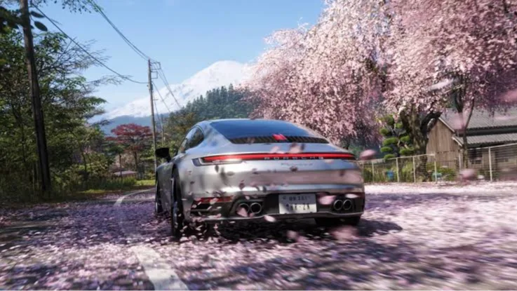

Luiso · 8 de septiembre de 2026
Xbox volvió a confirmar que Forza Horizon 6 llegará a PlayStation 5 antes de que termine 2026, despejando las dudas que habían surgido después de que Microsoft comenzara a revisar su estrategia de lanzamientos multiplataforma.
La confirmación llega mientras Xbox prepara una nueva actualización importante para el juego de conducción desarrollado por Playground Games. El contenido estará disponible el 10 de septiembre e incorporará una nueva temática centrada en la cultura automovilística británica, además de Drift Attack, un nuevo tipo de competición.
La llegada de Forza Horizon 6 a PlayStation 5 resulta especialmente significativa dentro del nuevo escenario de Xbox. La compañía comenzó a adoptar una política más selectiva respecto de qué títulos propios llegan a otras plataformas, después de haber llevado juegos como Forza Horizon 5, Sea of Thieves y Grounded a sistemas de la competencia.
Sin embargo, Forza Horizon 6 mantiene sus planes originales para PlayStation 5.
El antecedente de Forza Horizon 5 también ayuda a explicar la importancia de esta decisión. La versión para PlayStation 5 del anterior juego de la saga habría superado los 5 millones de jugadores o copias, según los datos citados por VGC, demostrando que existe un público considerable para la franquicia fuera del ecosistema de Xbox.
Por ahora, Microsoft no proporcionó una fecha exacta para el lanzamiento de Forza Horizon 6 en PlayStation 5. La ventana continúa siendo antes de finalizar 2026.
Mientras tanto, los jugadores de Xbox y PC recibirán el 10 de septiembre una nueva actualización que servirá para mantener activo el contenido del título mientras se acerca el lanzamiento de la versión para la consola de Sony.